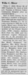

Brandon's Family Tree

Person Chart
Partners
| Partner | Date of Birth | Children |
|---|---|---|
 Beulah Parker (Strauss) Beulah Parker (Strauss) |
3/16/1912 |  Luther Leave Minor Luther Leave Minor |
Person Events
| Event Type | Date | Place | Description |
|---|---|---|---|
 Birth Birth |
5/17/1918 | Scott, Virginia, United States | |
| Place of Residence |
1920 | Powell Magisterial District, Scott, Virginia, United States | |
| Place of Residence |
1930 | District 12, Grainger, Tennessee, United States | |
| Place of Residence |
1940 | Civil District 11, Sullivan, Tennessee, United States | |
| Military Service |
1/15/1941 | Old Fort Estates, Catoosa, Georgia, United States | |
| Death |
September 1980 | Kingsport, Sullivan, Tennessee, United States | |
| Burial |
Kingsport, Sullivan, Tennessee, United States |